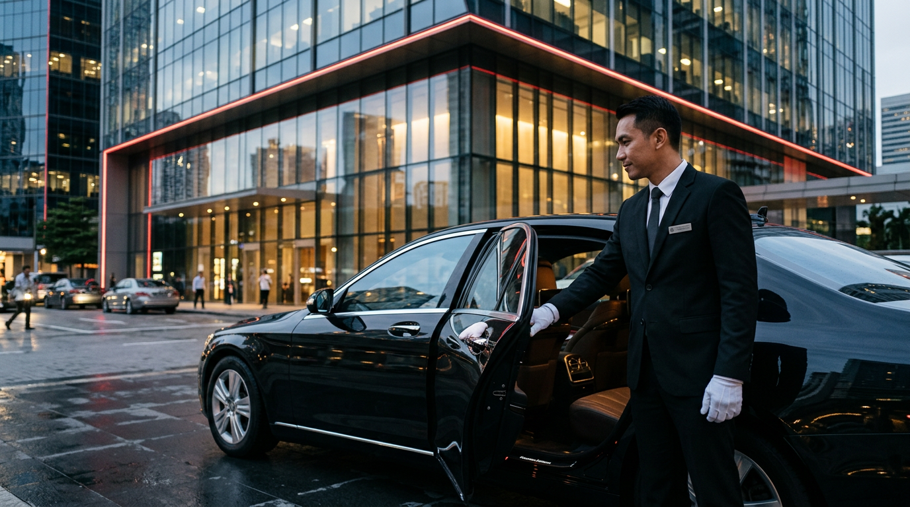
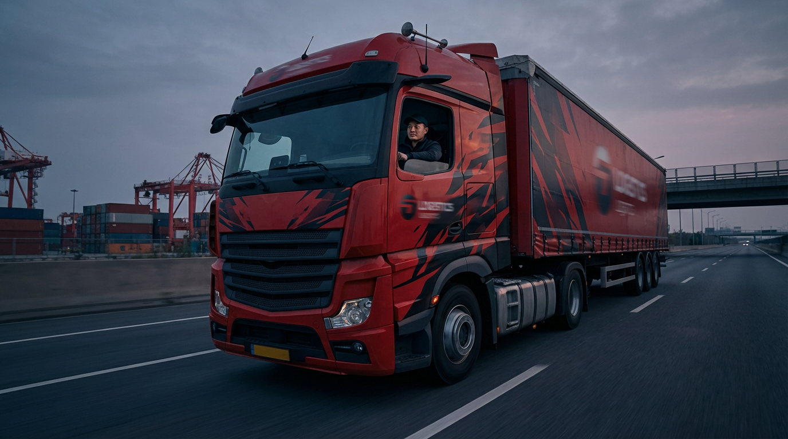

หางานขับรถเริ่มต้นอย่างไร
ขั้นตอนวางแผนสมัครงานอย่างเป็นระบบ ตั้งแต่เลือกสายงานจนถึงการสมัครหลายตำแหน่ง
Knowledge hub
เนื้อหาคัดสรรเพื่อช่วยให้คุณเตรียมตัวได้มั่นใจ สมัครงานได้เร็ว และเริ่มงานได้จริง
บทความล่าสุด
แต่ละบทความเชื่อมโยงไปยังตำแหน่งงานจริงของ SO WORK เพื่อให้คุณสมัครต่อได้ทันทีหลังอ่านจบ
ขั้นตอนวางแผนสมัครงานอย่างเป็นระบบ ตั้งแต่เลือกสายงานจนถึงการสมัครหลายตำแหน่ง

แนวทางเตรียมตัวสมัครและสัมภาษณ์ให้ดูเป็นมืออาชีพสำหรับงานขับรถผู้บริหาร


ทักษะขับรถ การบริการลูกค้า และการจัดการหน้างานที่หน่วยงานมองหา

เช็กลิสต์เอกสารที่ควรเตรียมให้ครบในครั้งเดียว ลดการติดตามย้อนหลัง
การแต่งกาย การตอบคำถาม และข้อผิดพลาดที่ควรเลี่ยงในห้องสัมภาษณ์